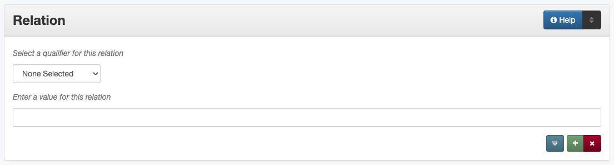

Relation
Definition
Information about another resource that is related to the current resource.
Where Can the Relation Information be Found?
Relation information provides a reference to a related resource which may be found on:
a title page
accompanying or supplementary information
How Relation Works in the Metadata Form
- Parts:
Relation type – drop-down menu
Relation – text field
- Repeatable?
Yes - to include multiple relationships, click ‘Add’ to repeat all field parts
- Required?
No (more information)
How Should the Relation be Filled in?
Enter information about known relationships in the records for both items
It is not necessary to do research to find related resources
If the relationship is unclear, uncertain, or otherwise questionable, the information may be entered into a note instead
Guideline |
Examples |
|---|---|
|
Experiment Station Record Volume 61 |
|
81-01796a-20_02 and 81-01796b-20_02 |
|
ark:/67531/metapth38109 |
Choose the appropriate relation qualifier from the controlled vocabulary
Generally both halves of the reciprocal relation should be represented so that each record references the other
In some cases, if there are a large number of related items on one side (usually has part/is part of), the child items should all reference the parent, but the reciprocal may be eliminated
The direction of the relationship should reflect which of the items was created first or is a more original version
If you cannot determine which is the more original/first created item, default to the one uploaded first (first ARK, sequentially)
If more than one qualifier applies (e.g., transcription and translation), choose one and explain as needed in a display note
If none of the qualifiers applies to the items, the qualifier can be left blank, but consider whether the information might be more appropriate in another field such as:
Relationship |
Description |
Examples |
|
|---|---|---|---|
Is based on / Is basis for |
To show that an item has an intellectual relation to another |
Is based on |
Is basis for |
A creative adaptation or modernization |
An original, creative work |
||
An executive summary |
A separately-published report or document |
||
A linguistic analysis |
An original text or transcript |
||
Is format of / Has format |
To show that the item has the same content in a different format |
Is format of |
Has format |
A photographic print |
An original negative |
||
A print manuscript |
A born-digital text file |
||
Is part of / Has part |
|
Is part of |
Has part |
A chapter from a book or report |
The complete volume |
||
An individual map |
A book or atlas containing the same map |
||
Is version of / Has version |
To show that an item has multiple identical or near-identical copies in the same format |
Is version of |
Has version |
An annotated legal document |
A plain copy of the same document |
||
Identical copies of a postcard, perhaps with different notes |
|||
Multiple prints of the same photo image with different cropping/enlargement |
|||
References / Is referenced by |
|
References |
Is referenced by |
A letter |
Separated, cited enclosures |
||
A news script |
An accompanying video clip |
||
A report |
Separately-published appendices, figures, or indexes |
||
A research publication |
A separate dataset analyzed in the document |
||
Replaces / Is replaced by |
To show that a later version overrides an earlier one |
Replaces |
Is replaced by |
A revised policy |
An older version of the same policy |
||
Any updated document |
A previous version/edition |
||
Requires / Is required by |
To show that an item needs another component |
||
Has transcription / Is transcription of |
To show that a handwritten item has a transcript |
Has transcription |
Is transcription of |
Any handwritten document, e.g., letter, ledger, organizational minutes, etc. |
A typed version of the same content |
||
A printed document written in calligraphy or fancy script, such as German Fraktur |
A plain-text or simple type version |
||
Has translation / Is translation of |
To show that an item has versions in different languages |
Has translation |
Is translation of |
Any item written in any language (e.g., pamphlet, letter, book, etc.) |
The same document or content published or made available in another language |
||
Conforms to |
To show that an item is compliant with a set of standards
|
||
Other Examples:
Detailed volumes with a separate summary
The summary report: |
Is based on: Texas House Legislative Budget Estimates:
2016-2017 Biennium, Articles 1-3, ark:/67531/metapth641220
Is based on: Texas House Legislative Budget Estimates:
2016-2017 Biennium, Articles 4-10, ark:/67531/metapth640727
|
Each complete report: |
Is basis for: Summary of Texas House Legislative Budget Board Estimates: 2016-17 Biennium, ark:/67531/metapth839391 |
Map with copies in multiple formats
Map of North Park Addition to Abilene, Texas [#1]: |
Has format: Map of North Park Addition to Abilene, Texas [#2],
OKHPB_0470, ark:/67531/metapth77939
Has format: Map of North Park Addition to Abilene, Texas [#3],
OKHPB_0491, ark:/67531/metapth77960
|
Map of North Park Addition to Abilene, Texas [#2]: |
Is format of: Map of North Park Addition to Abilene, Texas
[#1], OKHPB_0468, ark:/67531/metapth77936
Is format of: Map of North Park Addition to Abilene, Texas
[#3], OKHPB_0491, ark:/67531/metapth77960
|
Map of North Park Addition to Abilene, Texas [#3]: |
Is format of: Map of North Park Addition to Abilene, Texas
[#1], OKHPB_0468, ark:/67531/metapth77936
Is format of: Map of North Park Addition to Abilene, Texas
[#2], OKHPB_0470, ark:/67531/metapth77939
|
Application materials with photos duplicated as separate items
For complete application document: |
Has part: [Alexander Lowe House Photograph #1],
ark:/67531/metapth495135
Has part: [Alexander Lowe House Photograph #2],
ark:/67531/metapth495293
|
For each individual photo: |
Is part of: [Historic Marker Application: Alexander Lowe House], ark:/67531/metapth477613 |
City ordinances repeated in multiple volumes
For ordinances 1-20: |
Has version: [City of Clarendon Ledger: Ordinances 1-103], ark:/67531/metapth38109 |
For ordinances 1-103: |
Is version of: [City of Clarendon Ledger: Ordinances 1-20], ark:/67531/metapth38130 |
A series of volumes with a cumulative index
For the general index: |
References: Experiment Station Record Volume 61,
ark:/67531/metadc5095
(repeated with information for each volume)
|
For each volume: |
Is referenced by: Experiment Station Record General Index to Volumes 61-70, ark:/67531/metadc5055 |
A handwritten letter with a typed transcription
Original letter: |
Has transcription: [Transcript of letter from Josephus Moore to Charles Moore, February 16, 1865], CBM_2079-019-004, ark:/67531/metapth203126 |
Transcription: |
Is transcription of: [Letter from Josephus Moore to Charles Moore, February 16, 1865], CBM_2079-019-004, ark:/67531/metapth203348 |
A Texas document published in both English and Spanish
For the English version: |
Has translation: Boletín de Noticias, Primavera 2013, ark:/67531/metapth640173 |
For the Spanish version: |
Is translation of: Texas Talking Book News, Spring 2013, ark:/67531/metapth653584 |
Resources
UNT Relation Qualifier Controlled Vocabulary
Dublin Core Metadata Initiative (DCMI) Homepage
More Guidelines:
Comments
To make observations about related subject matter in the intellectual content of another resource (for example, photographs of the same storm-damaged building taken from different viewpoints), use the Note element.
Items may also have other content-based connections that are not represented best by a formal “Relation.” For example, materials may have topical, geographic, or temporal relationships represented in the Date, Coverage, Subject, or other appropriate fields.
Relationships are drawn primarily from Dublin Core Metadata Initiative (DCMI) standards (a full list of fields and controlled vocabulary terms can be accessed here.
The relationships for transcription and translation are locally added
We include “Conforms To” within our controlled vocabulary as a DCMI relationship, but it is not currently used within the system.
Local practice is to use the Relation field specifically for reciprocal references between items in the Digital Collections, rather than describing relationships between an item in the Digital Collections and an external resource.
Although only the ARK is technically required to establish a relationship, it is highly encouraged to include a title or other identifying information for clarity and to increase metadata shareability (e.g., for harvesting)